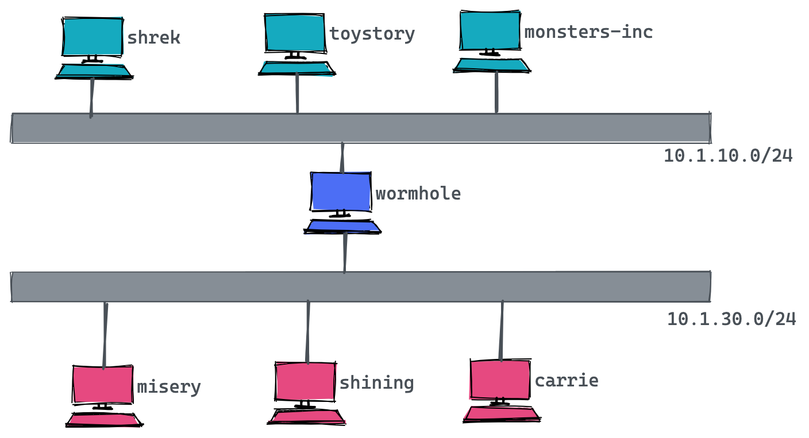

yum install bind bind-utils -y
systemctl enable named && systemctl start named && systemctl status namedBind
Table of Contents
安装
CentOS 7 上安装
安装
查看安装的版本
named -v
BIND 9.11.4-P2-RedHat-9.11.4-26.P2.el7_9.2 (Extended Support Version) <id:7107deb>Ubuntu 20.04 上安装
安装
sudo apt install bind9 bind9utils bind9-doc查看安装的版本
$ named -v
BIND 9.16.1-Ubuntu (Stable Release) <id:d497c32>建立 Bind
主机拓扑

地址域名映射表
# These are our main machines
10.1.10.2 shrek.movie.xyz shrek
10.1.10.3 toystory.movie.xyz toystory toys
10.1.10.4 monsters-inc.movie.xyz monsters-inc mi
# These machines are in horror(ible) shape and will be replaced # soon.
10.1.30.2 misery.movie.xyz misery
10.1.30.3 shining.movie.xyz shining
10.1.30.4 carrie.movie.xyz carrie
# A wormhole is a fictitious phenomenon that instantly transports
# space travelers over long distances and is not known to be
# stable. The only difference between wormholes and routers is
# that routers don't transport packets as instantly--especially
# ours.
10.1.10.1 wormhole.movie.xyz wormhole wh wh10
10.1.30.1 wormhole.movie.xyz wormhole wh wh30区域数据文件（Zone Datafile）
1. 名称到地址 db.movie.xyz
$TTL 3h
movie.xyz. IN SOA ns1.movie.xyz. kylin.movie.xyz. (
1 ; Serial
3h ; Refresh after 3 hours
1h ; Retry after 1 hour
1w ; Expire after 1 week
1h ) ; Negative caching TTL of 1 hour
movie.xyz. IN NS ns1.movie.xyz.
movie.xyz. IN NS ns2.movie.xyz.
;
;Host addresses
;
ns1.movie.xyz. IN A 10.1.10.176
ns2.movie.xyz. IN A 10.1.30.128
localhost.movie.xyz. IN A 127.0.0.1
shrek.movie.xyz. IN A 10.1.10.2
toystory.movie.xyz. IN A 10.1.10.3
monsters-inc.movie.xyz. IN A 10.1.10.4
misery.movie.xyz. IN A 10.1.30.2
shining.movie.xyz. IN A 10.1.30.3
carrie.movie.xyz. IN A 10.1.30.4
;
;Multi-homed hosts
;
wormhole.movie.xyz. IN A 10.1.10.1
wormhole.movie.xyz. IN A 10.1.30.1
;
; Aliases
;
toys.movie.xyz. IN CNAME toystory.movie.xyz.
mi.movie.xyz. IN CNAME misery.movie.xyz.
wh.movie.xyz. IN CNAME wormhole.movie.xyz.
wh10.movie.xyz. IN A 10.1.10.1
wh30.movie.xyz. IN A 10.1.30.1-
movie.xyz.- 区域名称 -
IN- 代表 Internet -
ns1.movie.xyz- 区域 movie.xyz 的 primary 名称服务的名称 -
kylin.movie.xyz- 区域负责人的邮件，将第一个 . 换成 @，既邮件为 kylin@movie.xyz
2. 地址到名称 db.10.1.10
$TTL 3h
10.1.10.in-addr.arpa. IN SOA ns1.movie.xyz. kylin.movie.xyz. (
1 ; Serial
3h ; Refresh after 3 hours
1h ; Retry after 1 hour
1w ; Expire after 1 week
1h ) ; Negative caching TTL of 1 hour
;
; Name servvers
;
10.1.10.in-addr.arpa. IN NS ns1.movie.xyz.
30.1.10.in-addr.arpa. IN NS ns2.movie.xyz.
;
; Addresses point to canonical name
;
1.10.1.10.in-addr.arpa. IN PTR wormhole.movie.xyz.
2.10.1.10.in-addr.arpa. IN PTR shrek.movie.xyz.
3.10.1.10.in-addr.arpa. IN PTR toystory.movie.xyz.
4.10.1.10.in-addr.arpa. IN PTR monsters-inc.movie.xyz.
176.10.1.10.in-addr.arpa. IN PTR ns1.movie.xyz.3. 地址到名称 db.10.1.30
$TTL 3h
30.1.10.in-addr.arpa. IN SOA ns1.movie.xyz. kylin.movie.xyz. (
1 ; Serial
3h ; Refresh after 3 hours
1h ; Retry after 1 hour
1w ; Expire after 1 week
1h ) ; Negative caching TTL of 1 hour
;
; Name servvers
;
10.1.10.in-addr.arpa. IN NS ns1.movie.xyz.
30.1.10.in-addr.arpa. IN NS ns2.movie.xyz.
;
; Addresses point to canonical name
;
1.30.1.10.in-addr.arpa. IN PTR wormhole.movie.xyz.
2.30.1.10.in-addr.arpa. IN PTR misery.movie.xyz.
3.30.1.10.in-addr.arpa. IN PTR shining.movie.xyz.
4.30.1.10.in-addr.arpa. IN PTR carrie.movie.xyz.
128.30.1.10.in-addr.arpa. IN PTR ns2.movie.xyz.4. 地址到名称 db.127.0.0
$TTL 3h
0.0.127.in-addr.arpa. IN SOA ns1.movie.xyz. kylin.movie.xyz. (
1 ; Serial
3h ; Refresh after 3 hours
1h ; Retry after 1 hour
1w ; Expire after 1 week
1h ) ; Negative caching TTL of 1 hour
;
; Name servvers
;
0.0.127.in-addr.arpa. IN NS ns1.movie.xyz.
0.0.127.in-addr.arpa. IN NS ns2.movie.xyz.
;
; Addresses point to canonical name
;
1.0.0.127.in-addr.arpa. IN PTR localhost.|
Note
|
The mod of zone datafile should be 644, the owner of zone datafile should be bind:bind.
|
BIND 配置
1. /etc/bind/named.conf
options {
directory "/var/cache/bind";
};
zone "movie.xyz" in {
type master;
file "db.movie.xyz";
};
zone "10.1.10.in-addr.arpa" in {
type master;
file "db.10.1.10";
};
zone "30.1.10.in-addr.arpa" in {
type master;
file "db.10.1.30";
};
zone "0.0.127.in-addr.arpa" in {
type master;
file "db.127.0.0";
};2. 配置文件格式检查
named-checkconf
named-checkzone movie.xyz /var/cache/bind/db.movie.xyz
named-checkzone 10.1.10.in-addr.arpa /var/cache/bind/db.10.1.10
named-checkzone 30.1.10.in-addr.arpa /var/cache/bind/db.10.1.30
named-checkzone 0.0.127.in-addr.arpa /var/cache/bind/db.127.0.03. 重启服务
sudo systemctl restart named.service测试
1. 查看 SOA
$ nslookup -type=ns movie.xyz 10.1.10.176
Server: 10.1.10.176
Address: 10.1.10.176#53
movie.xyz nameserver = ns2.movie.xyz.
movie.xyz nameserver = ns1.movie.xyz.2. 查看 A
$ nslookup carrie.movie.xyz 10.1.10.176
Server: 10.1.10.176
Address: 10.1.10.176#53
Name: carrie.movie.xyz
Address: 10.1.30.4
$ nslookup wormhole.movie.xyz 10.1.10.176
Server: 10.1.10.176
Address: 10.1.10.176#53
Name: wormhole.movie.xyz
Address: 10.1.10.1
Name: wormhole.movie.xyz
Address: 10.1.30.14. 查看 PTR
$ nslookup 10.1.30.4 10.1.10.176
Server: 10.1.10.176
Address: 10.1.10.176#53
4.30.1.10.in-addr.arpa name = carrie.movie.xyz.TD
2. db.movie.xyz
$TTL 3h
@ IN SOA toystory.movie.xyz. kylin.movie.xyz. (
1 ; Serial
3h ; Refresh after 3 hours
1h ; Retry after 1 hour
1w ; Expire after 1 week
1h ) ; Negative caching TTL of 1 hour
;
; Name servers
;
IN NS toystory.movie.xyz.
IN NS wormhole.movie.xyz.
;
; Addresses for the canonical names
;
localhost IN A 127.0.0.1
shrek IN A 10.1.10.2
toystory IN A 10.1.10.3
monsters-inc IN A 10.1.10.4
misery IN A 10.1.30.2
shining IN A 10.1.30.3
carrie IN A 10.1.30.4
wormhole IN A 10.1.10.1
IN A 10.1.30.1
;
; Aliases
;
toys IN CNAME toystory
mi IN CNAME monsters-inc
wh IN CNAME wormhole
;
; Interface specific names
;
wh249 IN A 10.1.10.1
wh253 IN A 10.1.30.13. db.10.1.10
$TTL 3h
@ IN SOA toystory.movie.xyz. kylin.movie.xyz. (
1 ; Serial
3h ; Refresh after 3 hours
1h ; Retry after 1 hour
1w ; Expire after 1 week
1h ) ; Negative caching TTL of 1 hour
;
; Name servers
;
IN NS toystory.movie.xyz.
IN NS wormhole.movie.xyz.
;
; Addresses point to canonical name
;
1 IN PTR wormhole.movie.xyz.
2 IN PTR shrek.movie.xyz.
3 IN PTR toystory.movie.xyz.
4 IN PTR monsters-inc.movie.xyz.4. db.10.1.30
$TTL 3h
@ IN SOA toystory.movie.xyz. kylin.movie.xyz. (
1 ; Serial
3h ; Refresh after 3 hours
1h ; Retry after 1 hour
1w ; Expire after 1 week
1h ) ; Negative caching TTL of 1 hour
;
; Name servers
;
IN NS toystory.movie.xyz.
IN NS wormhole.movie.xyz.
;
; Addresses point to canonical name
;
1 IN PTR wormhole.movie.xyz.
2 IN PTR misery.movie.xyz.
3 IN PTR shining.movie.xyz.
4 IN PTR carrie.movie.xyz.5. db.127.0.0
$TTL 3h
@ IN SOA toystory.movie.xyz. kylin.movie.xyz. (
1 ; Serial
3h ; Refresh after 3 hours
1h ; Retry after 1 hour
1w ; Expire after 1 week
1h ) ; Negative caching TTL of 1 hour
;
; Name servers
;
IN NS toystory.movie.xyz.
IN NS wormhole.movie.xyz.
1 IN PTR localhost.TD
6. 编辑 /etc/named.conf，添加
zone "movie.xyz" in {
type master;
file "db.movie.xyz";
};
zone "249.249.192.in-addr.arpa" in {
type master;
file "db.10.1.10";
};
zone "253.253.192.in-addr.arpa" in {
type master;
file "db.10.1.30";
};
zone "0.0.127.in-addr.arpa" in {
type master;
file "db.127.0.0";
};7. 配置文件格式检查
named-checkconf
named-checkzone movie.xyz db.movie.xyz
named-checkzone 249.249.192.in-addr.arpa db.10.1.10
named-checkzone 253.253.192.in-addr.arpa db.10.1.30
named-checkzone 0.0.127.in-addr.arpa db.127.0.08. 测试
$ nslookup carrie.movie.xyz 10.1.10.3
Server: 10.1.10.3
Address: 10.1.10.3#53
Name: carrie.movie.xyz
Address: 10.1.30.4
$ nslookup 10.1.30.4 10.1.10.3
Server: 10.1.10.3
Address: 10.1.10.3#53
4.253.253.192.in-addr.arpa name = carrie.movie.xyz.
$ nslookup ksoong.org 10.1.10.3
Server: 10.1.10.3
Address: 10.1.10.3#53
Non-authoritative answer:
Name: ksoong.org
Address: 192.30.252.153
Name: ksoong.org
Address: 192.30.252.1549. 查看父域
$ nslookup -type=ns com. 10.1.10.3
Server: 10.1.10.3
Address: 10.1.10.3#53
Non-authoritative answer:
com nameserver = m.gtld-servers.net.
com nameserver = k.gtld-servers.net.
com nameserver = a.gtld-servers.net.
com nameserver = g.gtld-servers.net.
com nameserver = f.gtld-servers.net.
com nameserver = c.gtld-servers.net.
com nameserver = h.gtld-servers.net.
com nameserver = e.gtld-servers.net.
com nameserver = b.gtld-servers.net.
com nameserver = d.gtld-servers.net.
com nameserver = i.gtld-servers.net.
com nameserver = j.gtld-servers.net.
com nameserver = l.gtld-servers.net.
Authoritative answers can be found from:
b.gtld-servers.net internet address = 192.33.14.30
e.gtld-servers.net internet address = 192.12.94.30
l.gtld-servers.net internet address = 192.41.162.30
f.gtld-servers.net internet address = 192.35.51.30
i.gtld-servers.net internet address = 192.43.172.30
c.gtld-servers.net internet address = 192.26.92.30
j.gtld-servers.net internet address = 192.48.79.30
g.gtld-servers.net internet address = 192.42.93.30
a.gtld-servers.net internet address = 192.5.6.30
d.gtld-servers.net internet address = 192.31.80.30
k.gtld-servers.net internet address = 192.52.178.30
h.gtld-servers.net internet address = 192.54.112.30
m.gtld-servers.net internet address = 192.55.83.30
b.gtld-servers.net has AAAA address 2001:503:231d::2:30
e.gtld-servers.net has AAAA address 2001:502:1ca1::30
$ nslookup -type=ns -norecurse cebbank.com. b.gtld-servers.net
Server: b.gtld-servers.net
Address: 192.33.14.30#53
Non-authoritative answer:
*** Can't find cebbank.com.: No answer
Authoritative answers can be found from:
cebbank.com nameserver = dns1.cebbank.com.
cebbank.com nameserver = dns2.cebbank.com.
cebbank.com nameserver = dns3.cebbank.com.
cebbank.com nameserver = dns4.cebbank.com.
cebbank.com nameserver = dns5.cebbank.com.
cebbank.com nameserver = dns8.cebbank.com.
dns1.cebbank.com internet address = 202.99.20.227
dns1.cebbank.com has AAAA address 2408:8607:2500:0:2210::102
dns2.cebbank.com internet address = 111.205.94.106
dns2.cebbank.com has AAAA address 2408:8607:1d00:0:1210::102
dns3.cebbank.com internet address = 219.143.234.227
dns3.cebbank.com has AAAA address 240e:604:204:800:1110::102
dns4.cebbank.com internet address = 106.37.164.154
dns4.cebbank.com has AAAA address 240e:604:207:700:2110::102
dns5.cebbank.com internet address = 223.72.163.107
dns5.cebbank.com has AAAA address 2409:8700:1:d0:2310::102
dns8.cebbank.com internet address = 111.205.215.18210. 配置 slave, 文件拷贝
scp /etc/named.conf root@192.153.253.3:/etc
scp db.127.0.0 root@10.1.30.3:/var/named/11. 配置 slave，修改 named.conf
zone "movie.xyz" in {
type slave;
file "bak.movie.xyz";
masters { 10.1.10.3; };
};
zone "249.249.192.in-addr.arpa" in {
type slave;
file "bak.10.1.10";
masters { 10.1.10.3; };
};
zone "253.253.192.in-addr.arpa" in {
type slave;
file "bak.10.1.30";
masters { 10.1.10.3; };
};
zone "0.0.127.in-addr.arpa" in {
type master;
file "db.127.0.0";
};12. 启动 slave
chown root:named named.conf
systemctl restart namedTD
**
**
**
**